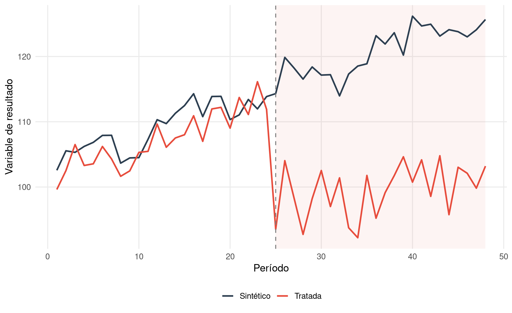
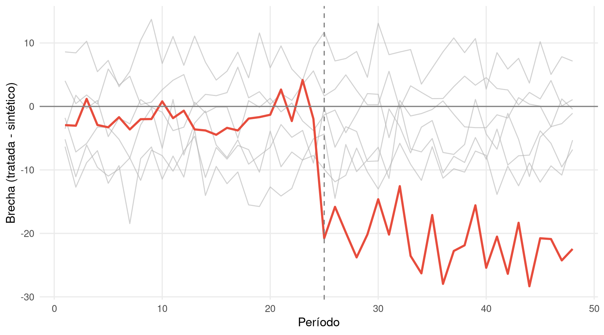

Cuando solo hay una unidad tratada —una empresa excluida, un mercado afectado, un territorio cartelizado— los métodos basados en grupos de control convencionales pierden fuerza. No hay un promedio de unidades tratadas que suavice el ruido; todo descansa sobre un único caso. El método de control sintético, desarrollado por Abadie, Diamond y Hainmueller, aborda esta situación construyendo una unidad ficticia —el “gemelo sintético”— como combinación ponderada de unidades no tratadas que replica la trayectoria de la unidad afectada antes de la conducta.
Si el sintético se aproxima bien a la unidad tratada en el período previo, la divergencia posterior a la conducta se interpreta como el efecto causal. La inferencia se realiza mediante placebos: se repite el ejercicio asignando ficticiamente el tratamiento a cada unidad de control y se compara el efecto estimado para la unidad real con la distribución de efectos placebo.
14.2 La intuición: ponderar donantes para clonar la trayectoria previa
Code
set.seed(1414)n_unidades <-7; n_periodos <-48; t_tratamiento <-25# Generar panel con efectos fijos y tendenciadf_synth <-expand_grid(unidad =paste0("U", 1:n_unidades), periodo =1:n_periodos) |>mutate(uid =match(unidad, unique(unidad)),fe =c(100, 95, 105, 98, 102, 110, 92)[uid],tendencia =0.5* periodo +2*sin(2* pi * periodo /12),tratada =if_else(unidad =="U1", 1, 0),efecto =if_else(tratada ==1& periodo >= t_tratamiento, -15-0.3* (periodo - t_tratamiento), 0),y = fe + tendencia + efecto +rnorm(n(), 0, 2.5) )# Pesos del sintético (OLS restringido simplificado)pre <- df_synth |>filter(periodo < t_tratamiento)y_tratada <- pre |>filter(unidad =="U1") |>pull(y)Y_donantes <- pre |>filter(unidad !="U1") |>pivot_wider(id_cols = periodo, names_from = unidad, values_from = y) |>select(-periodo) |>as.matrix()# Pesos por regresión restringida (normalización post-hoc)w_raw <-coef(lm(y_tratada ~ Y_donantes -1))w_raw[w_raw <0] <-0w <- w_raw /sum(w_raw)# Sintético para todo el períodopost_full <- df_synth |>filter(unidad !="U1") |>pivot_wider(id_cols = periodo, names_from = unidad, values_from = y) |>select(-periodo) |>as.matrix()y_synth <-as.numeric(post_full %*% w)y_real <- df_synth |>filter(unidad =="U1") |>pull(y)df_plot_synth <-tibble(periodo =1:n_periodos,Tratada = y_real, Sintético = y_synth) |>pivot_longer(-periodo, names_to ="serie", values_to ="valor")ggplot(df_plot_synth, aes(x = periodo, y = valor, color = serie)) +annotate("rect", xmin = t_tratamiento, xmax = n_periodos, ymin =-Inf, ymax =Inf,fill ="#e74c3c", alpha =0.06) +geom_line(linewidth =0.95) +geom_vline(xintercept = t_tratamiento, color ="grey50", linetype ="dashed") +scale_color_manual(values =c("Tratada"="#e74c3c", "Sintético"="#2c3e50")) +labs(x ="Período", y ="Variable de resultado", color =NULL) +theme_minimal(base_size =13) +theme(legend.position ="bottom", panel.grid.minor =element_blank())

Figure 14.1: Control sintético: la unidad tratada y su gemelo sintético coinciden antes de la conducta; la divergencia posterior mide el efecto
La Figure 14.1 muestra el resultado: antes del tratamiento, la unidad real y su gemelo sintético son prácticamente indistinguibles. Después del tratamiento, se abre una brecha que cuantifica el efecto de la conducta.
# Placebos: repetir el ejercicio para cada donanteplacebo_gaps <-map_dfr(paste0("U", 2:n_unidades), function(u_placebo) { y_plac <- df_synth |>filter(unidad == u_placebo) |>pull(y) gap <- y_plac - y_synth # gap simplificadotibble(periodo =1:n_periodos, gap = gap, unidad = u_placebo)})gap_real <-tibble(periodo =1:n_periodos, gap = y_real - y_synth, unidad ="U1 (tratada)")ggplot() +geom_line(data = placebo_gaps, aes(x = periodo, y = gap, group = unidad),color ="grey70", alpha =0.6, linewidth =0.5) +geom_line(data = gap_real, aes(x = periodo, y = gap), color ="#e74c3c", linewidth =1.1) +geom_vline(xintercept = t_tratamiento, color ="grey50", linetype ="dashed") +geom_hline(yintercept =0, color ="grey50") +labs(x ="Período", y ="Brecha (tratada - sintético)") +theme_minimal(base_size =13) +theme(panel.grid.minor =element_blank())

Figure 14.2: Inferencia por placebos: la brecha de la unidad tratada (rojo) se compara con las brechas placebo de las unidades de control
14.5 Relevancia jurídica
El control sintético resulta especialmente útil cuando la víctima es una única empresa y no existe un grupo de control natural. La Guía Práctica de la Comisión Europea reconoce los métodos de construcción de contrafactuales basados en combinaciones ponderadas de unidades no afectadas. La jurisprudencia ha aceptado enfoques análogos cuando el perito justifica la selección de donantes y la calidad del ajuste pretratamiento.
14.6 Errores frecuentes
El error principal es presentar un control sintético con mal ajuste pretratamiento como si fuera fiable. Si el sintético no replica la trayectoria previa de la unidad tratada, la brecha posterior no puede interpretarse causalmente. El segundo error es no realizar la inferencia por placebos, que es la única forma de evaluar si la brecha observada es estadísticamente inusual.
14.7 Lo que un tribunal debe retener
El control sintético construye un “clon estadístico” de la víctima a partir de unidades no afectadas. Si ese clon replica bien el pasado de la víctima, la divergencia posterior mide el efecto de la conducta. Es el método más adecuado cuando solo hay un caso individual, y su credibilidad descansa en la calidad del ajuste pretratamiento y en la inferencia por placebos.